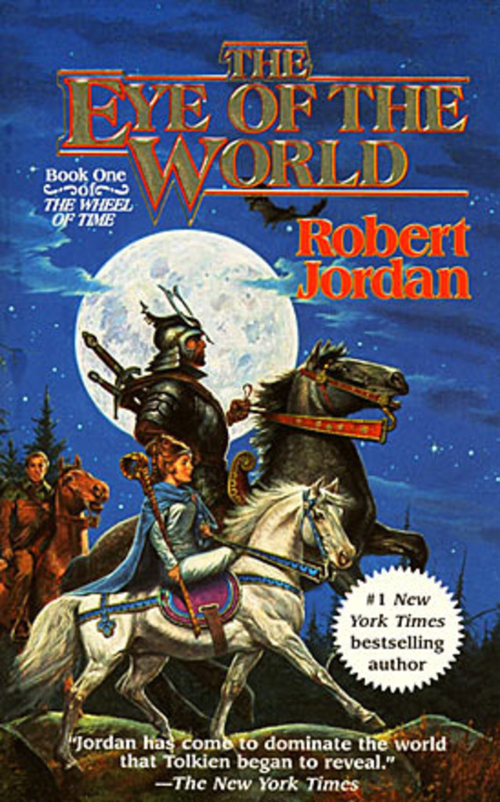

The Eye of the World
⭐️⭐️⭐️⭐️
Format: 🎧 (29 hours 57 minutes)
This book will suck you right in. It's a simple enough storyline, but the character development, and world-building is unmatched. Jordan had a true gift for it, so you very easily can see the events unfold, feel a connection to the characters, relate to and sympathize with their struggles, and all along feel like you're right in the middle of the action. It's a fantastic introduction to the 13 (14 if you count the prequel) book series.
Three youths from a quite village are somewhat unwillingly swept up in an adventure. Primary focused on escaping what hunts them (and taking that danger away from their village), they leave with a sorceress (though the books never call them that), her bodyguard, a gleeman, and two aspiring sorceresses. They discover more about themselves, the world, and magic (again, they never call it "magic", but that's what it is to us outsiders). I always felt like this book ended a bit weird - not exactly seeing why they ended up where they went (and in the perspective of the series, it's somewhat irrelevant, which only goes to justify my feelings).
I read this years ago, and ended up enjoying the series immensely (admittedly feeling a lull in the action for multiple books (I don't remember which ones)). Between a coworker reading them for the first time, and another having some disparaging remarks about the completion of the series, and my own enjoyment of the series originally, I felt like I could give the series another try (with the benefit of already knowing the outcome). Last time I read them, it took me a year, but I know it'll go faster this time, only because I don't have to pay as close of attention as I did the first time through.
- Prior: Cryptonomicon
- Next: Lord of the Flies